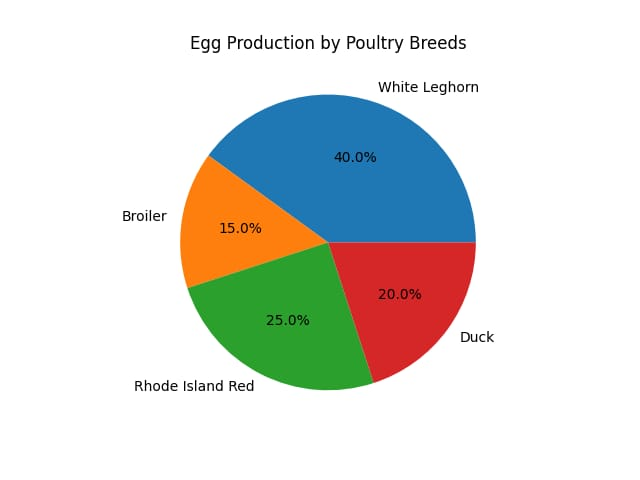
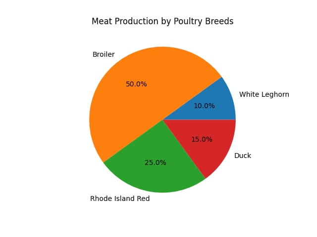

Breed selection is an important step in poultry farming. Different poultry breeds are selected for egg production, meat production, growth rate, and adaptability to climate.
| Breed | Purpose | Characteristics |
|---|---|---|
| Leghorn | Egg Production | High egg laying capacity |
| Broiler | Meat Production | Fast growth rate |
| Rhode Island Red | Dual Purpose | Good meat and egg production |
| Duck | Dual Purpose | Strong adaptability |
The following charts show the contribution of different poultry breeds in egg production and meat production. White Leghorn has the highest egg production, while Broiler contributes the most to meat production. These differences help farmers choose suitable breeds based on farm goals.

This pie chart represents the egg production contribution of different poultry breeds used in farming. White Leghorn has the highest share because it is a specialized layer breed known for producing a large number of eggs annually. Rhode Island Red also contributes well due to its dual-purpose nature, while Duck provides moderate egg output. Broiler contributes the least because it is mainly reared for meat production rather than egg laying.

This pie chart shows the meat production contribution of different poultry breeds. Broiler has the highest percentage because it grows rapidly and is specifically bred for meat production. Rhode Island Red contributes moderately as it is suitable for both meat and eggs, while Duck also provides useful meat yield. White Leghorn has the lowest contribution since it is primarily selected for egg production.